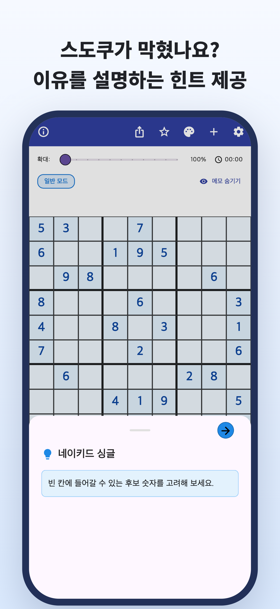
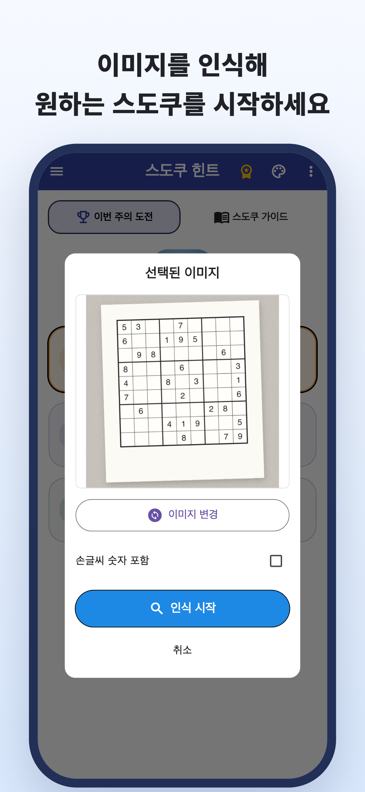
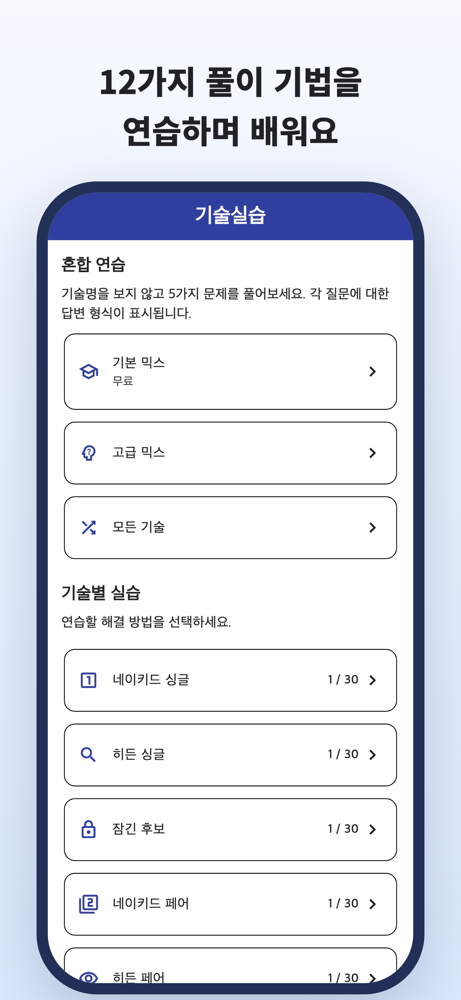
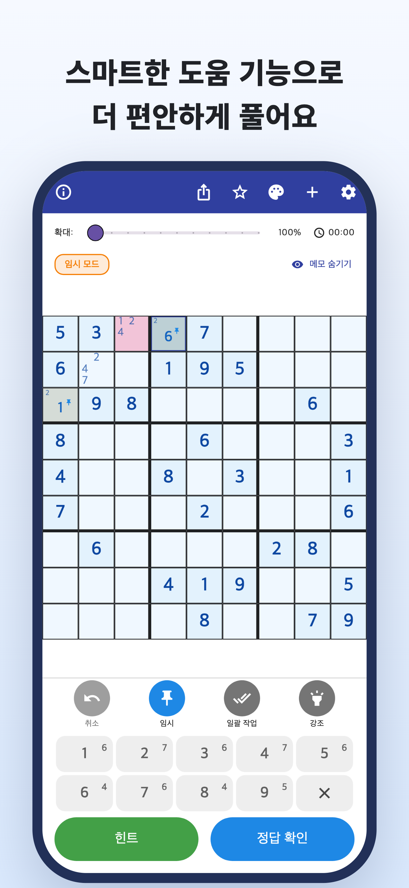
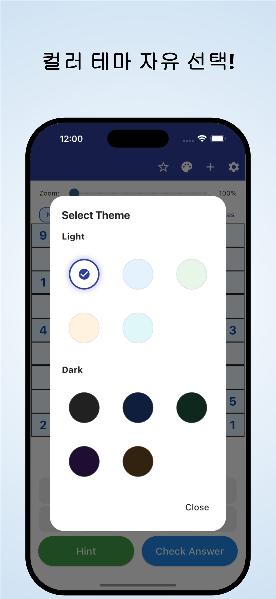

“다음에는 어디를 봐야 할까?”
몇 번이나 다시 살펴봐도 숫자를 넣지 못하고,
같은 곳에서 계속 막혀요.
카메라로 스캔 · 이유를 알려 주는 힌트
신문과 잡지의 문제도 카메라로 가져오세요.
숫자가 들어가는 이유를 이해하고, 다시 스스로 풀어 보세요.
iPhone·Android 지원 / 무료 다운로드 · 앱 내 구입





풀다 보면 이런 적 없나요?
몇 번이나 다시 살펴봐도 숫자를 넣지 못하고,
같은 곳에서 계속 막혀요.
왜 그 숫자가 들어가는 걸까요?
정답을 옮겨 적는 것만으로는 부족해요.
지금 종이로 풀고 있는 문제를
앱에서도 이어서 풀고 싶어요.
막힌 순간을 다음 단서로
신문이나 잡지의 스도쿠를 사진에서 읽어 들여 숫자를 하나씩 입력하는 수고를 줄일 수 있어요.
이미지에서 읽기힌트로 숫자가 들어가는 이유를 확인하세요. 정답을 채우는 데 그치지 않고 다음 수를 생각하는 단서로 삼을 수 있어요.
이유를 알려 주는 힌트기법별 설명과 연습으로 궁금한 풀이를 확인하고, 배운 기법을 스스로 찾는 연습을 할 수 있어요.
기법별 연습직접 푸는 즐거움을 소중히 여기는 분께
평소 풀던 문제를 가져와 멈춘 곳부터 이어서 풀고 싶어요.
막힌 부분의 이유를 이해하고 스스로 풀어 나가고 싶어요.
처음 시작하는 분도, 새로운 기법을 배우려는 분도.
읽기 · 체험 · 연습
먼저 브라우저에서 시작하세요.
설명을 읽거나 문제 하나를 끝까지 풀 수 있어요.
파란 테두리의 칸을 보고 힌트를 열어 보세요.
다음 수 힌트
빈칸의 후보를 확인하세요.
한 수를 체험하는 웹 예제이며, 앱과 화면 구성이 달라요.
스도쿠를 풀다가 막혔다면.
스도쿠 힌트 다운로드
무료 다운로드 · 앱 내 구입
무료로 다운로드해 체험할 수 있어요. 힌트·정답 확인·이미지 읽기 등에는 이용 횟수 제한이 있으며, 일부 이용 시 동영상 광고를 시청해야 해요.
Premium은 월간 또는 연간 구독이에요. 광고 제거와 무제한 힌트·정답 확인 등을 제공해요. 이미지 읽기는 Premium에도 제한이 있어요. 요금과 이용 조건은 앱에서 확인하세요.
스도쿠를 촬영한 이미지를 가져올 수 있어요. 읽어 들인 숫자를 확인하고 틀린 부분을 수정한 뒤 시작하세요. 일반적인 9×9 스도쿠를 지원해요.
앱에 포함된 문제와 기법별 설명·연습을 이용할 수 있어요. 일부 문제와 연습은 Premium 전용이에요.
이 페이지의 한 수 데모 외에 브라우저에서 문제 하나를 끝까지 풀고 기법 설명과 연습을 살펴볼 수 있어요.
스도쿠 가이드